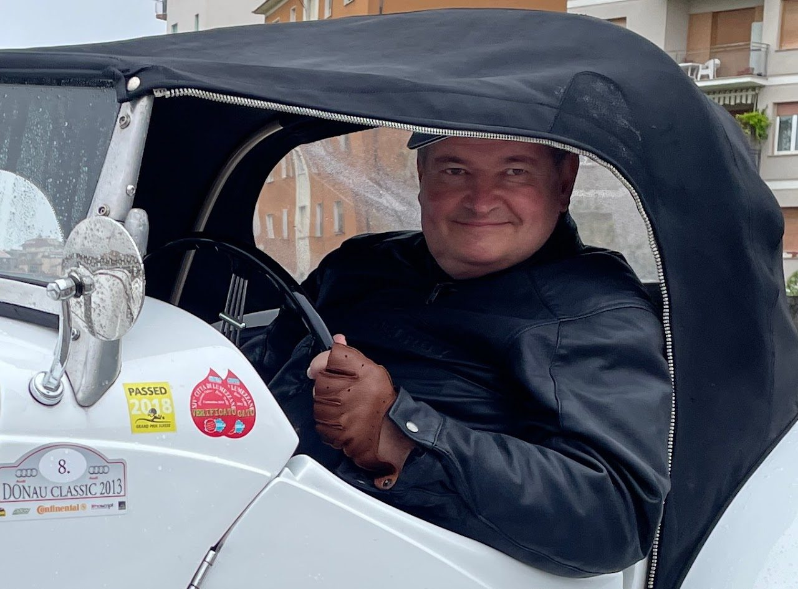

Oldtimer-Ausfahrten ab Thun und Bern
Mit dem Oldtimer zum Mittagessen
Sie sitzen auf dem Beifahrerplatz, wir fahren. Wir holen Sie in Bern oder Thun ab, nehmen die schöne Strecke und bringen Sie zu einem ausgewählten Landgasthof. Nach dem Essen geht es zurück.
So läuft es
Sie wollten einen Oldtimer mieten? Lehnen Sie sich lieber zurück.
Kein Mietvertrag, keine ungewohnte Schaltung, keine Haftung. Sie erleben den Oldtimer so, wie er gedacht war: mit Fahrtwind, Motorklang und Aussicht. Selbst fahren ist bei uns ausgeschlossen.
-
1
Abholung
Treffpunkt beim Hotel Bellevue Palace in Bern oder am Rathausplatz in Thun (Restaurant Krone). Auf Wunsch holen wir Sie zu Hause ab.
-
2
Ausfahrt
Auf dem Beifahrersitz über Land, durchs Emmental, Gürbetal oder ins Oberland.
-
3
Einkehr und Rückfahrt
Mittagessen im Landgasthof, danach bringen wir Sie gemütlich wieder nach Hause.
Das passende Geschenk
Für jemanden, der schon alles hat
Zur Pensionierung
Das Team-Geschenk, an das man sich erinnert. Gemeinsam schenken, frei aufteilbar.
Für Eltern und Grosseltern
Gemeinsame Zeit statt Gegenstand: eine Fahrt wie früher, ein gutes Essen.
Zum Hochzeitstag
Eine Überraschung zu zweit, mit Fahrtwind und gedecktem Tisch.
Zum runden Geburtstag
60, 70 oder 80: ein Tag, der mehr ist als ein Gutschein in der Schublade.
Die Ziele
Einkehren in ausgewählten Landgasthöfen
Wir fahren zu inhabergeführten Restaurants der Gilde etablierter Schweizer Gastronomen. Ernährungswünsche und Allergien leiten wir mit Ihrer Anfrage an das Restaurant weiter.

Die Fahrzeuge
Vier Automobile, vier Charaktere
Sie wählen Ihr Fahrzeug bei der Anfrage, nach Verfügbarkeit. Alle werden von ihrem Halter gefahren und gepflegt.

Sbarro BMW 328 Roadster

Porsche 356 B Coupé

Peugeot 203 C

Porsche Boxster S 3.2

Unsere Haltung
Kulturgut gehört auf die Strasse
Historische Automobile gehören nicht ins Museum, sondern auf die Strasse und zu den Menschen. tischleinfahrdich.ch macht diese Fahrzeuge für einen erweiterten Kreis erlebbar: als Beifahrer, auf dem Weg zu einem guten Essen.
Wir sind kein gewerblicher Anbieter. Der Unkostenbeitrag deckt Betrieb, Vorbereitung und Werterhalt der Fahrzeuge.
Ihr Gastgeber: Beat Sutter, Oldtimer-Halter und zertifizierter Classic Car Scrutineer
Ihre Ausfahrt berechnen
Datum, Treffpunkt und Ziel wählen: Abfahrtszeit und Unkostenbeitrag werden sofort angezeigt. Beispiel: ab Bern zum Löwen in Riffenmatt, 2 Stunden Fahrzeit hin und zurück, CHF 340.–. Verschenken Sie die Ausfahrt: Den Gutschein erhalten Sie als PDF per E-Mail, bereit zum Ausdrucken oder Weiterleiten.
Häufige Fragen
Gut zu wissen
Muss ich selbst fahren?
Nein. Sie sitzen auf dem Beifahrerplatz, der Halter fährt. Selbstfahren ist ausgeschlossen.
Kann man bei Ihnen einen Oldtimer mieten?
Nein, wir vermieten nicht. Sie erleben eine kuratierte Ausfahrt als Beifahrer, ohne Haftung und ohne Schaltstress.
Wie hoch ist der Unkostenbeitrag?
CHF 170 pro Stunde Fahrzeit (Hin- und Rückfahrt), ab 1 Stunde. Die Zeit im Restaurant wird nicht verrechnet. Das Essen ist nicht inbegriffen: Sie bestellen und bezahlen direkt im Restaurant.
Wann und wo sind Ausfahrten möglich?
Freitags. Wir sind um 11:30 Uhr im Restaurant, das Essen beginnt zwischen 11:45 und 12:00 Uhr. Treffpunkt ist das Hotel Bellevue Palace in Bern oder der Rathausplatz in Thun (Restaurant Krone); auf Wunsch holen wir Sie auch zu Hause ab.
Wie viele Personen haben Platz?
Im Sbarro BMW 328, im Porsche 356 B und im Porsche Boxster S fährt jeweils ein Gast mit. Im Peugeot 203 C haben bis zu drei Gäste Platz – ideal für Paare oder kleine Familien.
Was passiert bei schlechtem Wetter?
Wir fahren bei jedem Wetter. Eine Verschiebung wegen Wetter ist nicht vorgesehen.